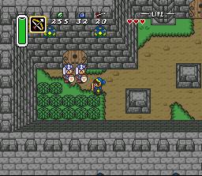
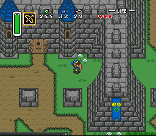
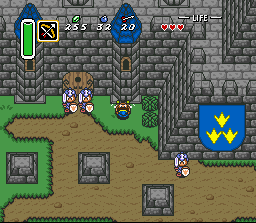
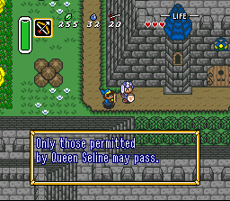
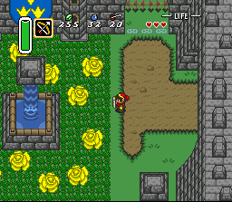
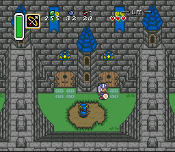

Zelda 3 Challenge - Screen Shots - Batch 5
Here are fifteen new screen shots!These cover Calatia Castle and Lellow Farm.
Starting Locations
I couldn't resist starting the batch this way. :)
These are the two locations you can start from after the beginning of the game.
The third starting location, listed after you've reached it, is a secret...
Calatia Castle

At long last, I can show the end result of the previously posted castle drawings.
(Refer to this diary page.)
Link is, of course, inside the tunnel.
The banner displays the three Flames of Calatia.
They aren't all-powerful nor wish-granting like the Triforce,
but you can't save your homeland unless you find them.

These soldiers guard the way to Queen Seline's private quarters. No one may pass!
I'm probably going to remove one of the soldiers, since they look like twins.

Here's another tunnel which Link can pass under.
The banner here displays two yellow roses, the symbol of Calatian royalty.

It goes without saying that everything here is as real to Link as ever.
The castle is made of completely new blocks, from scratch at the 8x8 level.
In these examples, the blocks that made up Hyrule Castle are completely gone.

With one exception, all the soldiers say this.
Notice the higher levels on the castle, south of Link...

This is one of three yellow rose gardens within the castle walls.
The thorn bushes inflict pain, just as a cactus would in the original game.
The magical fountain in the center of each garden pours water from a large, floating block.
To the east is one the exits, to the town of Meridia.

This picture shows just how high the walls are in some areas.
Link is standing in the south part of the castle grounds.
An important artifact lies within.
Updates to Previous Screenshots
I just had to display this town picture again,
now that I finally pasted in the mushroom graphics for the wooden pegs.
Wouldn't you like to crush a few..?
Thanks to CALD for submitting them into the graphics contest of yesteryear.
Last time, I had a villager standing here.
Now, along with some minor field improvements,
I have a castle guard defending the entrance to Calatia Castle.
???
Just a simple picture. If you could just see beyond these trees
to the right, this would be a surprising screenshot...
Lellow Farm
Welcome to Lellow Farm! None of the crops are growing yet,
but there are oranges hidden in the trees here.
As you know, life on the farm requires a lot of work!
I love how the chickens posed perfectly for this picture.
Are they conversing in cucco?
Yes, that pitchfork will hurt you if you walk across it.
If you walk through the hay, Link will stumble through it.
Ah, now the crops are starting to yield veggies!
When you throw them, they bounce and lay around on the ground.
Too bad they never have shadows, though I didn't realize this while playing.
I can almost hear the Super Mario 2 main song...
Link can really jump into this well, but what's underneath the farm?
And how could he get back out?
And why can't he hold onto the chicken while falling in?
I'm SO glad I'm finally finished with the farm and castle areas. The castle took several months to do, but there was a lot of programming and starting over involved. (Plus focus on other areas.) The farm only took a week or two in total, with the most work going into the well. I'm not replacing ALL the blocks in the game, so many areas will go much faster. As always, feedback is welcome!!
Questions? Ideas? Suggestions?
Write to me!
Return to Zelda3C's main page
This site is not affiliated with nor endorsed by Nintendo in any way.